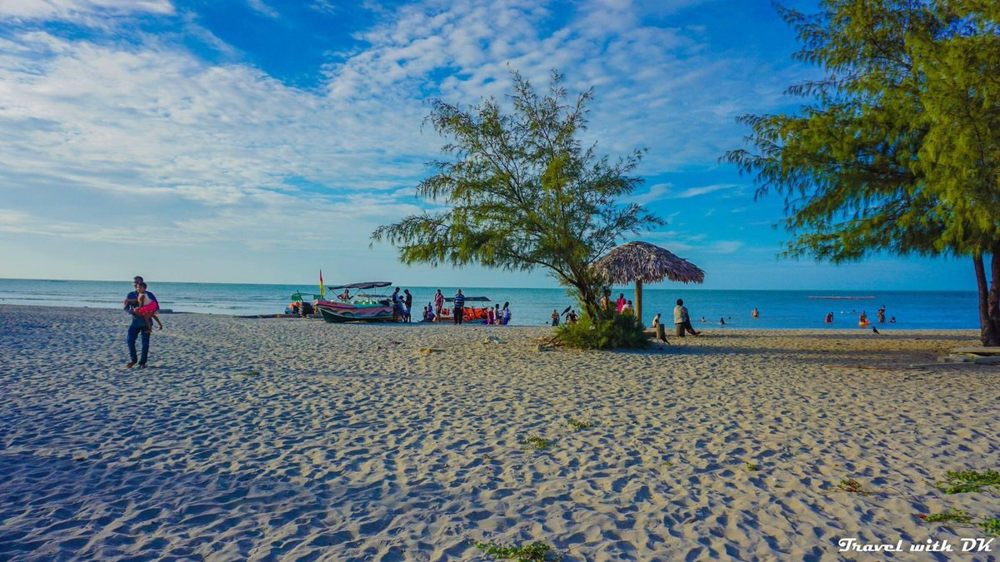
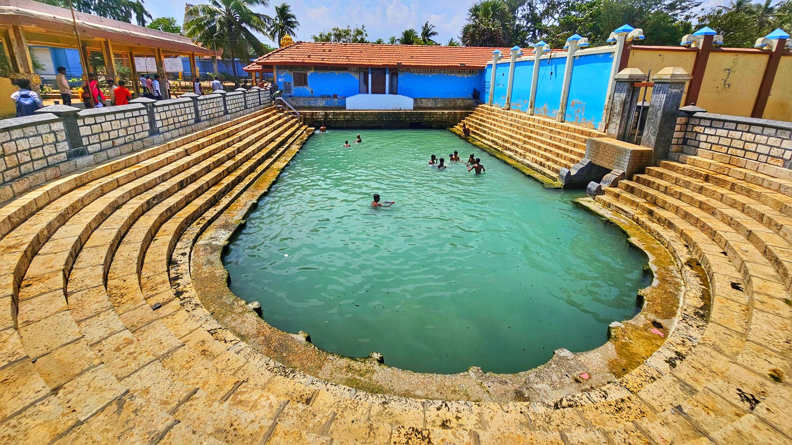

Key Attractions

Jaffna Fort is a historic Dutch fortification with ramparts and scenic views over the harbor and city.

Nallur Kandaswamy Temple is a major Hindu pilgrimage site with vibrant festivals, intricate architecture, and spiritual ambiance.

Casuarina Beach offers white sands, calm waters, and serene views, perfect for relaxation and beach activities.

The ferry to Delft Island takes visitors to explore wild horses, historical ruins, and unspoiled landscapes.

Keerimalai is a natural spring and temple area with sacred waters and scenic surroundings for a peaceful visit.